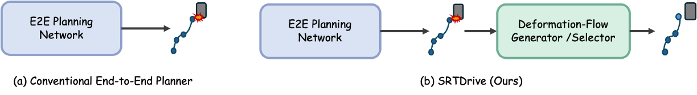
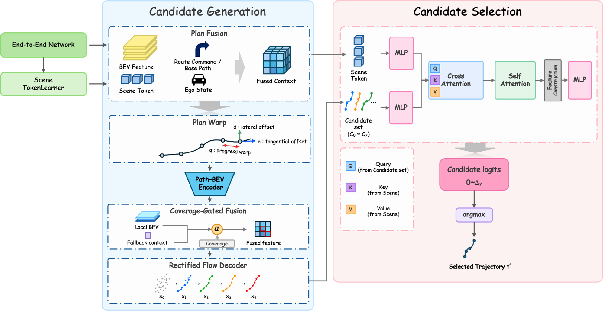
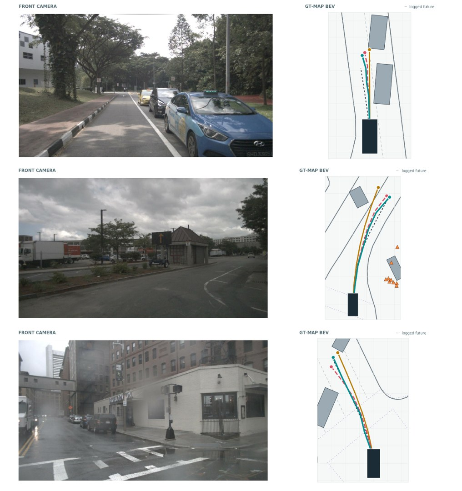

Frozen base planner
The planner's weights stay intact, and its output is kept unchanged as the reference candidate τ0.
Anonymous ICLR 2027 submission
01 · Overview
End-to-end planners output a single final plan that can still collide with surrounding agents, even when a small adjustment could avoid the collision. Retraining the planner changes its weights and acquired behavior, and learned candidate scorers are not trained to judge a replacement relative to the original plan.
We propose SRTDrive, a post-hoc refinement framework that leaves the planner frozen, keeps its output unchanged as a reference trajectory, and learns whether to retain or replace it. A generator produces alternatives as deformations of the reference along and across its path, so that every alternative is directly comparable to the original plan. A selector then scores each candidate relative to the reference and is trained so that a replacement that increases collision at any horizon is never the target, however close it is to the logged trajectory; trajectory error only ranks equally safe candidates. At inference, the top-ranked candidate, possibly the reference itself, is output without a collision threshold.
On Bench2Drive, SRTDrive raises the Driving Score of VAD-Base from 43.07 to 47.77 and reduces the routes with collisions from 95 to 86, whereas the same candidates selected by a TTC rule do not yield these gains. On nuScenes, applied to seven frozen planners without retraining, it lowers L2 error on five and the collision rate on three, with the largest gains on VAD.
02 · Core idea
The planner's output is not assumed to be safe. It is scored as one candidate, so a single selection function decides when to keep the plan and when to replace it.

(a) A conventional end-to-end planner outputs a single final plan that may still collide with surrounding agents. (b) SRTDrive keeps the planner frozen and takes its output as the reference; the deformation-flow generator produces alternatives around it, and the selector either retains the reference or replaces it with an alternative, here removing the collision without retraining the planner. View full size ↗
The planner's weights stay intact, and its output is kept unchanged as the reference candidate τ0.
A rectified-flow generator produces K = 7 alternatives as progress, normal, and tangential deformations of the reference, so each is directly comparable to it.
Every selection logit is computed from a candidate–reference pair. The top-ranked candidate, possibly the reference itself, is output as is.
03 · Method
Generating alternatives is kept separate from deciding whether to replace the plan: the generator only constructs alternatives, and the selector makes the final choice.

A frozen base planner provides BEV features and a single planned trajectory, which is kept unchanged as the reference τ0. The deformation-flow generator produces K alternatives as progress and normal–tangential deformations of the reference, conditioned on the reference, path-local BEV features, scene tokens, driving command, and ego state. The set-contextual selector encodes all candidates including the reference, contextualizes them through scene–candidate and candidate–candidate attention, predicts a selection logit from each candidate's relation to the reference, and outputs the top-ranked candidate as is. Collision labels and logged trajectories are used only to construct training targets. View full size ↗
BEV features are sampled around the reference path and combined with scene tokens, the driving command, and the ego state.
Rectified flow learns deformations in the reference's own frame. Its targets are the reference itself, the logged future, and offline repair trajectories that remove collisions without using the logged future.
The training target never favors a replacement that increases collision relative to the reference at any horizon. Trajectory error only ranks equally safe candidates.
The top-ranked candidate is output with no collision gate, averaging, or coordinate regression. The collision priority is a training target, not an inference-time guarantee.
04 · Results
All closed-loop rows use the same VAD-Base weights and PID controller. Open-loop comparisons are valid within a planner, not across planners with different protocols.
Over the 220 official routes, SRTDrive completes more of each route (63.64% to 70.04%) while fewer routes contain a collision.
Table 2a · Bench2Drive, 220 official routes Coll. counts routes with at least one collision and is not an official benchmark metric. Each configuration is evaluated in a single run. Best value per column in bold.
| Method | DS ↑ | SR (%) ↑ | Efficiency ↑ | Comfort (%) ↑ | RC (%) ↑ | Coll. ↓ |
|---|---|---|---|---|---|---|
| VAD-Base | 43.07 | 16.82 | 163.84 | 50.80 | 63.64 | 95 |
| + SRT (TTC rule) | 39.56 | 12.27 | 165.67 | 33.73 | 79.69 | 172 |
| + SRT | 47.77 | 19.09 | 168.60 | 40.26 | 70.04 | 86 |
Table 2b · Multi-ability success rate (%) Each ability is scored on a subset of the routes, so a difference can correspond to only a few routes.
| Method | Merging | Overtaking | Emerg. Brake | Give Way | Traffic Sign | Mean |
|---|---|---|---|---|---|---|
| VAD-Base | 11.25 | 20.00 | 20.00 | 30.00 | 23.68 | 20.99 |
| + SRT (TTC rule) | 10.00 | 13.33 | 8.33 | 40.00 | 26.32 | 19.60 |
| + SRT | 12.50 | 11.11 | 33.33 | 20.00 | 30.00 | 21.39 |
The same candidates selected by a TTC rule reach the highest route completion but collide on 172 routes, nearly twice as many as the base planner. The largest ability gain is in Emergency Brake, consistent with progress deformations that express deceleration along the reference. Overtaking and Give Way decrease, and Comfort is lower because selection is made independently at each step. Generating seven alternatives and selecting adds 98 ms per step, about 11% of the 876 ms VAD-Base takes.
| Frozen planner | L2 (m) ↓Base → +SRT | Collision (%) ↓Base → +SRT |
|---|---|---|
| VAD | 0.723 → 0.677 | 0.165 → 0.125 |
| UniAD | 1.086 → 1.079 | 0.282 → 0.277 |
| GenAD | 0.542 → 0.541 | 0.183 → 0.167 |
| DMAD | 0.619 → 0.614 | 0.147 → 0.161 |
| IR-WM | 0.901 → 0.888 | 0.644 → 0.644 |
| SparseDrive | 0.608 → 0.613 | 0.103 → 0.109 |
| DiffusionDrive | 0.567 → 0.573 | 0.079 → 0.084 |
The clearest gain is on VAD, where SRTDrive also halves the 1 s collision rate (0.020% to 0.010%). On the other six planners the changes stay within 0.016 in either metric, and the collision rate rises on DMAD, SparseDrive, and DiffusionDrive. Several of these planners already refine their own output at inference, which leaves less room for local refinement.
For VAD on nuScenes, the selector keeps the reference in 22.1% of the 5,119 valid samples and replaces it in the rest. Most replacements reorder collision-free candidates by trajectory error, which accounts for the L2 gain.
At every horizon, more than 99.3% of replacements leave the collision metric unchanged. At 3 s, 25 replacements lower it and 2 raise it.

Left: front camera. Right: BEV with ground-truth map elements and agents (gray boxes: vehicles, triangles: pedestrians), the logged future (black, dotted), the VAD reference (orange), the TTC rule applied to the same candidates (red, dashed), and the SRTDrive output (teal). SRTDrive corrects the reference with small lateral and progress adjustments rather than a new route. View full size ↗
05 · Limitations
As stated in the paper.
06 · Citation
Author and affiliation information is omitted during double-blind review. Code will be released on this page.
@misc{anonymous_srtdrive_2027,
title = {SRTDrive: Safety-Aware Trajectory Refinement via Reference-Relative Supervision},
author = {Anonymous},
note = {Under review at ICLR 2027}
}